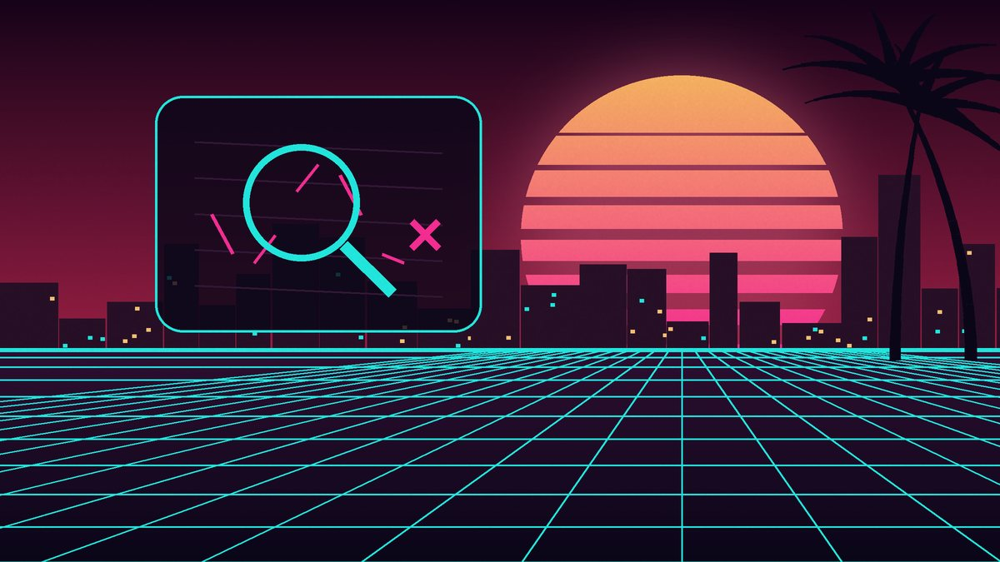

El barco que hay frente a la casa de Jason lleva el mapa de Los Santos en el GPS
Está aparcado ahí desde el primer minuto de partida y es el mismo modelo de yate que tenía Michael en GTA 5. Un jugador apuntó con los prismáticos a la pantalla del timón y encontró el puerto de Los Santos.
Por Redacción Golpe Diario · Publicado el · Actualizado el

Qué ha pasado
El barco está delante de la casa de Jason y se ve desde el principio del juego, sin misión ni requisito previo. Es un Marquis, el mismo modelo que tenía Michael De Santa en GTA 5, según recogen TechJuice y Game Rant. Game Rant añade que ya se vio de pasada en los tráileres previos al estreno, y TechJuice, que los fans sospechaban entonces que había sido de Michael, algo que no se podía comprobar hasta el lanzamiento.
La gracia está en la pantalla del timón. Un usuario de Reddit, rahiou, lo enseñó en el foro r/GTA: apuntó con los prismáticos al puesto de mando y vio que el GPS no muestra Leonida, sino la parte sur de Los Santos, con el puerto, los muelles y la costa por debajo de la ciudad. El mapa del juego anterior, metido dentro del nuevo. Output Lag no tiene claro si fue él quien lo encontró o solo enlazó el hilo, y TechJuice cita una publicación en X del 19 de noviembre en la que una cuenta de GTA 6 dice que la pantalla parece mostrar parte del mapa de Los Santos.
De ahí a decir que es el yate de Michael hay un paso que nadie ha dado de forma oficial. Rockstar no ha confirmado de quién es el barco y Output Lag deja claro que Rockstar no ha dicho nada. Lo que sí hay es un modelo repetido y un mapa que no pinta nada en Leonida. Game Rant da por hecho que es el mismo barco, pero lo presenta como interpretación suya.
Las teorías que circulan son varias. En GTA 5, Michael pierde su barco al principio, cuando su hijo intenta venderlo y se lo roban. Game Rant y TechJuice suponen que pasó por varias manos hasta acabar en Leonida; Output Lag recoge que hay quien cree que Brian se lo pasó a Jason y quien piensa que la pantalla es una textura de GTA 5 reutilizada. El juego no dice nada de eso. Output Lag lo cuenta junto a otras referencias a GTA 5 halladas tras el estreno, como Wade Hebert, Fabien LaRouche y el misterio del Monte Chiliad.
Para verlo por tu cuenta, el truco es el zoom. La pantalla es diminuta y a ojo no se lee, así que hay que acercarla con los prismáticos, como hizo quien lo encontró.
Qué significa para ti
- Lo tienes a mano desde el primer minuto: está aparcado frente a la casa de Jason.
- Sin prismáticos no se ve. Es una pantalla minúscula dentro del puesto de mando.
- Es un guiño para la colección de secretos, no un botín: ninguna de las fuentes habla de recompensa.
- Que el modelo sea el de Michael no quiere decir que el juego lo afirme. Rockstar no ha confirmado nada, y lo que hay es un parecido y un mapa fuera de sitio.
Lo tienes también en la guía: Secretos y easter eggs de GTA 6: dónde están y cómo llegar
Contrastado con: Output Lag · TechJuice · Game Rant
Sigue leyendo
El ovni de GTA 6: déjate abducir en Kelly County y acabarás sacando a un alienígena de una base secreta
Empieza de madrugada, con un coche abandonado y una mujer flotando en un haz de luz al este de Port Gellhorn. Sigue con tres días de partida perdidos y un sueño con un código. Y termina en una base militar con un alienígena metido en una cápsula. Este es el camino entero, con lo que coincide en cuatro guías y lo que no.
Le apuntó con el francotirador desde un sitio alto y el peatón apareció detrás de él
Un jugador contó que apuntó de noche a un peatón que no se había dado cuenta y que el hombre se volvió invulnerable y se le plantó a la espalda. Nadie sabe si es un fallo o algo puesto a propósito. Lo que sí ha explicado Rockstar es que en GTA 6 la gente de la calle reacciona a las armas como no lo hacía en GTA 5.
En la radio de GTA 6 suena una canción inédita de D'Angelo, y está en los créditos oficiales
Worldwide FM, una de las emisoras de GTA 6, pone un tema de D'Angelo titulado Kamikazi que no se había publicado en ningún sitio. No es una suposición de la comunidad: la canción figura en los créditos de música de Rockstar.